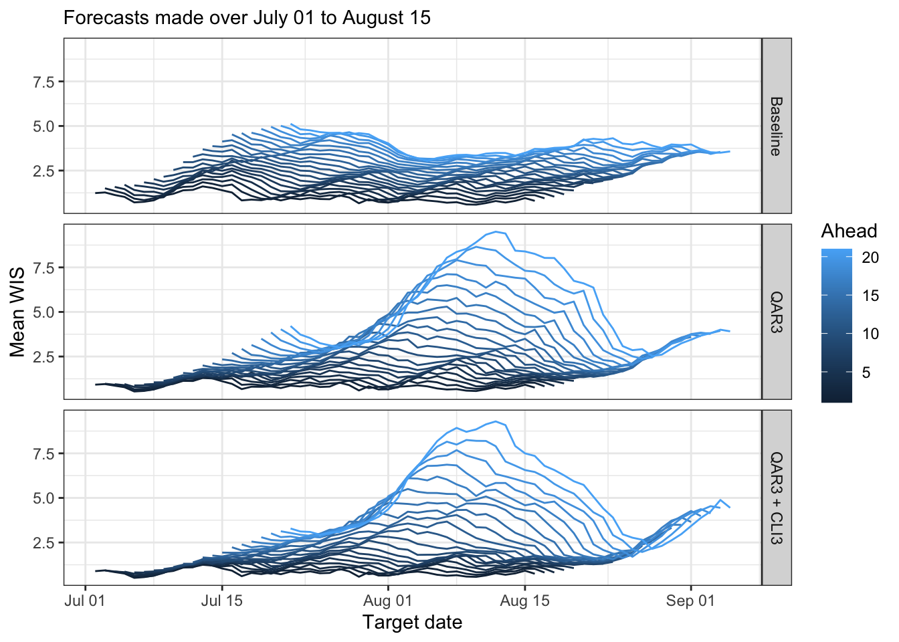

vignettes/quantgen-forecast-cv.Rmd
quantgen-forecast-cv.RmdNote that I’m using covidcast from the “r/0.4.0-release” branch, and evalcast from the “evalcast-killcards” branch
Also, the code chunk below took a while to run, so I ran it separately and saved the results in a file that you can find in the modeltools/vignettes/ subfolder
library(covidcast) library(evalcast) library(modeltools) library(dplyr) ## Setup # What are we forecasting? response_source <- "jhu-csse" response_signal <- "confirmed_7dav_incidence_prop" incidence_period <- "day" ahead <- 1:21 geo_type <- "state" forecast_dates <- seq(as.Date("2020-07-01"), as.Date("2020-08-15"), by = "day") # Some quantgen parameters n <- 21 # Training set size (in days) lags <- c(0, 7, 14) # Lags (in days) for features no_pen_vars <- 1 # Variables to leave unpenalized (lastest response value) nlambda <- 20 # Number of lambda values to consider in cross-validation lp_solver <- "gurobi" sort <- TRUE nonneg <- TRUE # Important: functions to considerably speed up data fetching steps. Only pull # recent data for each forecast date, depending on the training set size (and # other parameters for quantgen) start_day_baseline <- function(forecast_date) { return(as.Date(forecast_date) - n - 4 + 1) } start_day_quantgen <- function(forecast_date) { return(as.Date(forecast_date) - max(ahead) - n - max(lags) + 1) } ## Produce forecasts # Produce forecasts using a baseline forecaster pred_baseline <- get_predictions( forecaster = baseline_forecaster, name_of_forecaster = "Baseline", signals = tibble::tibble( data_source = response_source, signal = response_signal, start_day = list(start_day_baseline)), forecast_dates = forecast_dates, incidence_period = incidence_period, ahead = ahead, geo_type = geo_type, signal_aggregation = "long") # Quantile autoregression with 3 lags, or QAR3 pred_quantgen1 <- get_predictions( forecaster = quantgen_forecaster, name_of_forecaster = "QAR3", signals = tibble::tibble( data_source = response_source, signal = response_signal, start_day = list(start_day_quantgen)), forecast_dates = forecast_dates, incidence_period = incidence_period, ahead = ahead, geo_type = geo_type, signal_aggregation = "list", n = n, lags = lags, nlambda = nlambda, no_pen_vars = no_pen_vars, lp_solver = lp_solver, sort = sort, nonneg = nonneg) # Quantile autoregression with 3 lags, plus 3 lags of the CLI-in-community # signal from Delphi's symptom survey, or QAR3 + CLI3 pred_quantgen2 <- get_predictions( forecaster = quantgen_forecaster, name_of_forecaster = "QAR3 + CLI3", signals = tibble::tibble( data_source = c(response_source, "fb-survey"), signal = c(response_signal, "smoothed_hh_cmnty_cli"), start_day = list(start_day_quantgen)), forecast_dates = forecast_dates, incidence_period = incidence_period, ahead = ahead, geo_type = geo_type, signal_aggregation = "list", n = n, lags = lags, nlambda = nlambda, no_pen_vars = no_pen_vars, lp_solver = lp_solver, sort = sort, nonneg = nonneg) ## Evaluate forecasts # Now "evaluate" all of these predictions. In quotes because we pass a fake # evaluation function so we can do it ourselves later. This is because I'd # rather see results compressed down to have one row per forecast task (not one # row per forecasted quantile value) and it's easier to use dplyr::summarize() results <- evaluate_predictions( predictions_cards = rbind(pred_baseline, pred_quantgen1, pred_quantgen2), err_measures = list(temp = function(quantile, value, actual) NA)) %>% select(geo_value, ahead, quantile, forecaster, forecast_date, target_end_date, value, actual) # Overwrite evalcast::absolute_error() and evalcast::weighted_interval_score(), # because I was having some problems with them, see issues #392 and #393 on the # cmu-delphi/covidcast repo. (This might have been fixed now but I'm still just # leaving these function definitions in place to be safe) absolute_error <- function(tau, value, actual) { return(abs(actual - value)[tau == 0.5]) } weighted_interval_score <- function(tau, value, actual) { return((absolute_error(tau, value, actual) / 2 + sum(pmax(tau * (actual - value), (tau - 1) * (actual - value), na.rm = TRUE))) / (length(tau) + 1) * 2) } # Do the evaluations ourselves evals <- results %>% filter(!is.na(quantile)) %>% # NAs are problematic for simple my functions group_by(geo_value, ahead, forecaster, forecast_date, target_end_date) %>% summarize(ae = absolute_error(quantile, value, actual), wis = weighted_interval_score(quantile, value, actual)) %>% ungroup() # Save everything to file save(list = ls(), file = "quantgen-forecast-cv.rda", compress = "xz")
Load the data and take a peak at the evals tibble
## geo_value ahead forecaster forecast_date target_end_date ae wis
## 1 ak 1 Baseline 2020-07-01 2020-07-02 2.1851385 2.0609845
## 2 ak 1 Baseline 2020-07-02 2020-07-03 2.1137606 1.9686318
## 3 ak 1 Baseline 2020-07-03 2020-07-04 2.4910810 2.3464647
## 4 ak 1 Baseline 2020-07-04 2020-07-05 2.2179115 2.0681040
## 5 ak 1 Baseline 2020-07-05 2020-07-06 1.7694377 1.5969166
## 6 ak 1 Baseline 2020-07-06 2020-07-07 0.7488111 0.5527823Some convenient functions for analysis and plotting
library(dplyr) library(tidyr) library(purrr) library(ggplot2) theme_set(theme_bw()) # Scale error measures, which are columns of df as indicated by vars, based on # those of a particular forecaster, given by denom_forecaster; and the argument # err_cols identifies which columns of the data frame contain the error metrics # (important for pivoting purposes; err_cols can actually be a strict superset # of the error columns, that won't be a problem) scale_by_forecaster <- function(df, vars, denom_forecaster, err_cols = c("ae", "wis")) { df_list <- map(vars, function(var) { df %>% select(setdiff(names(df), setdiff(err_cols, var))) %>% pivot_wider(names_from = "forecaster", names_prefix = var, values_from = var) %>% mutate(across(starts_with(var), ~ .x / !!sym(paste0(var, denom_forecaster)))) %>% pivot_longer(cols = starts_with(var), names_to = "forecaster", values_to = var) %>% mutate(forecaster = substring(forecaster, nchar(var) + 1)) %>% filter(forecaster != denom_forecaster) }) return(reduce(df_list, left_join)) } # Helpful wrapper on interaction() for our canonical plotting function Interaction = function(...) { params = list(...) if (length(params) == 0) return(NULL) else if (length(params) == 1) return(params[[1]]) else return(interaction(...)) } # Produce a "canonical" plot, based on two columns in df specified by x and y. # The aggr argument gives the aggregation function used; dots and lines just # control what appears on the plot; group_vars gives the variables to group by # pre-aggregation (in addition to x); facet_rows gives variables for faceting on # rows, and likewise for facet_cols; denom_forecaster what forecaster to use for # a relative metric; scale_before_aggr is a Boolean flag indicating the order of # operations; all arguments after that are label/legend parameters canonical_plot = function(df, x, y, aggr = mean, dots = TRUE, lines = TRUE, group_vars = "forecaster", facet_rows = NULL, facet_cols = NULL, denom_forecaster = NULL, scale_before_aggr = FALSE, title = waiver(), subtitle = waiver(), xlab = waiver(), ylab = waiver(), legend_position = "bottom", legend_title = NULL) { # Scale before aggregation, if we need to if (!is.null(denom_forecaster) && scale_before_aggr) { df <- scale_by_forecaster(df, y, denom_forecaster) } # Aggregate df <- df %>% group_by(!!!syms(group_vars), !!sym(x)) %>% drop_na() %>% summarize(!!y := aggr(!!sym(y))) # Scale after aggregation, if we need to if (!is.null(denom_forecaster) && !scale_before_aggr) { df <- scale_by_forecaster(df, y, denom_forecaster) } # Set up plotting layers dots_layer <- NULL; line_layer = NULL color_vars <- setdiff(group_vars, c(facet_rows, facet_cols)) df <- df %>% mutate(color = Interaction(!!!syms(color_vars))) if (dots) dots_layer <- geom_point(aes(color = color, group = color)) if (lines) line_layer <- geom_line(aes(color = color, group = color)) facet_layer <- facet_grid(rows = vars(!!!syms(facet_rows)), cols = vars(!!!syms(facet_cols))) label_layer <- labs(title = title, subtitle = subtitle, x = xlab, y = ylab, color = legend_title) theme_layer <- theme(legend.pos = legend_position) # Plot and return ggplot(df, aes(x = !!sym(x), y = !!sym(y))) + line_layer + dots_layer + facet_layer + label_layer + theme_layer }
Try it out, mean AE and mean WIS
subtitle = sprintf("Forecasts made over %s to %s", format(min(forecast_dates), "%B %d"), format(max(forecast_dates), "%B %d")) canonical_plot(evals, x = "ahead", y = "ae", aggr = mean, subtitle = subtitle, xlab = "Days ahead", ylab = "Mean AE")
canonical_plot(evals, x = "ahead", y = "wis", aggr = mean, subtitle = subtitle, xlab = "Days ahead", ylab = "Mean WIS")
Let’s just focus on WIS from here on, since AE behaves qualitatively similarly. Here’s relative mean WIS (relative to baseline)
canonical_plot(evals, x = "ahead", y = "wis", aggr = mean, denom_forecaster = "Baseline", subtitle = subtitle, xlab = "Days ahead", ylab = "Relative mean WIS")
Median relative WIS (still relative to baseline; note the reversal in the order of operaitons, and median for robustness)
canonical_plot(evals, x = "ahead", y = "wis", aggr = median, denom = "Baseline", scale_before = TRUE, sub = subtitle, xlab = "Days ahead", ylab = "Median relative WIS")
Now produce some plots of forecast scores time, i.e., by target end date
canonical_plot(evals, x = "target_end_date", y = "wis", aggr = mean, dots = FALSE, group_vars = "forecaster", sub = subtitle, xlab = "Target date", ylab = "Mean WIS")
canonical_plot(evals %>% filter(ahead %in% (1:3 * 7)), x = "target_end_date", y = "wis", aggr = mean, dots = FALSE, group_vars = c("forecaster", "ahead"), facet_rows = "ahead", sub = subtitle, xlab = "Target date", ylab = "Mean WIS")
canonical_plot(evals, x = "target_end_date", y = "wis", aggr = mean, dots = FALSE, group_vars = c("forecaster", "ahead"), facet_rows = "forecaster", sub = subtitle, xlab = "Target date", ylab = "Mean WIS", legend_pos = "right", legend_title = "Ahead")

Now of a plot forecast scores broken down by target end date and ahead